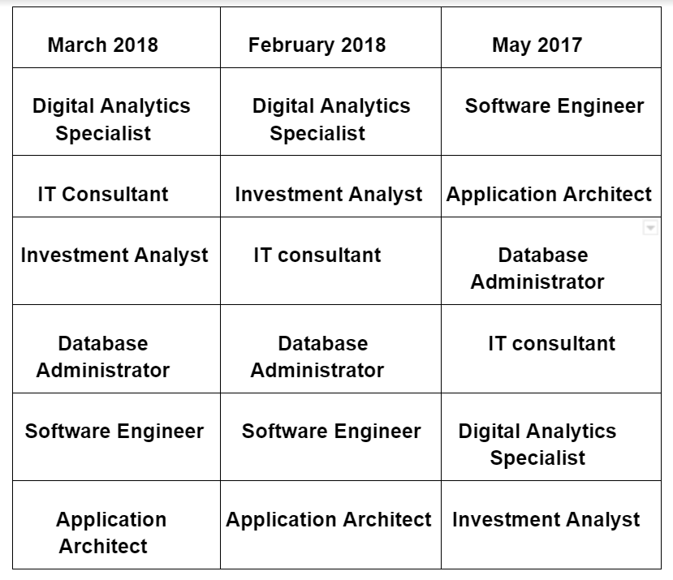
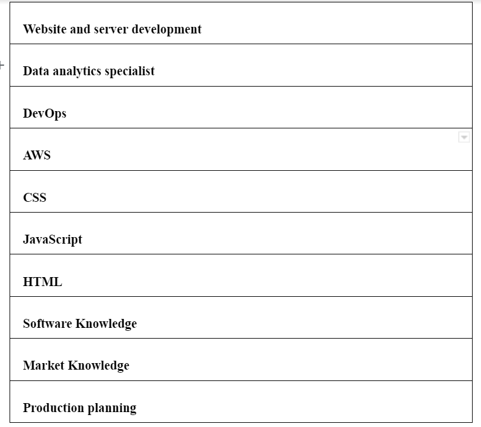
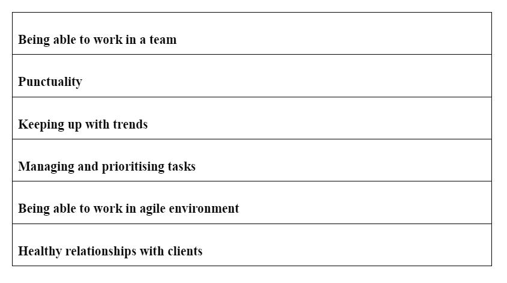

The job titles of our group’s jobs are Investment Analyst, Digital Analytics Specialist, Application Architect, Database Administrator, Software engineer, IT consultant respectively.
According to Burning glass data, whose service involves artificial intelligence match peoples’ resumes with job postings, the ranking in terms of demand from employers over 3 years is as follows:

The IT specific skills required in our skill set ranked in terms of demand from employers with reference to Burning glass : 
The general specific skills required in our skill set ranked in terms of demand from employers with reference to Burning glass : 
As mentioned above, the IT specific skill set of the group is pretty much what is in demand. However, there were some skills which appeared in the list but not in our skill set. Those were:
IT skills in Artificial Intelligence and Machine learning make one of the most demanding and best jobs in the world.
Familiarity with network and software security, data encryption, knowledge of compliance regulations and standards such as HIPAA, CCPA and PCI-DSS is one of the most demanding jobs.
It is a subset of Artificial Intelligence and is quite useful for programmers and data professionals. It has also come out to be the most prominent skills to learn in the technology sphere.
The three highest ranked general skills which were not in our required skill set were found to be:
You are required to find logical solutions to problems quite often, so, analytical abilities allow you to diagnose technology issues and fix them. Having this ability provides a major edge when you look for IT careers.
This skill elucidates the ability to derive software, technology and products that embrace their own productivity. A resourceful mind who uses resources effectively and efficiently tends to always stand out in whatever they do.
One must always have confidence and faith in themselves, their colleagues and the company they’re working for. Striking a healthy balance between being confident, over confident and arrogant is quite essential as well.
Having looked and studied the Burning Glass data, we feel that the ideal jobs we have and the skill set required for them are mostly right on track. However the jobs in our list who are not as demanding as the others can be considered to other subfields like Artificial Intelligence. This way, we can get our effective set of jobs that are actually demanded in the market.